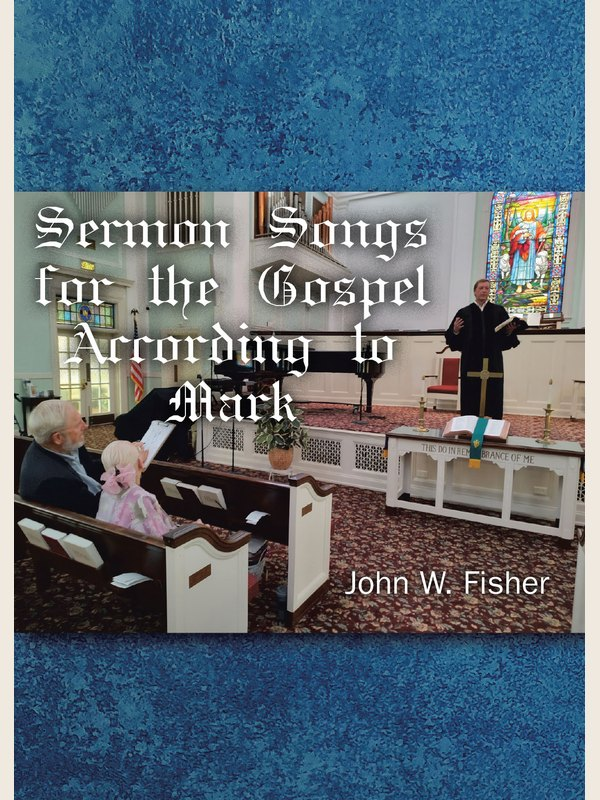

Choral · Sermon Song
Sermon Songs for the Gospel According to Mark
Twenty-nine sermons from First Presbyterian Church, Fort Myers, turned into settings a congregation can sing. Baptism through resurrection.